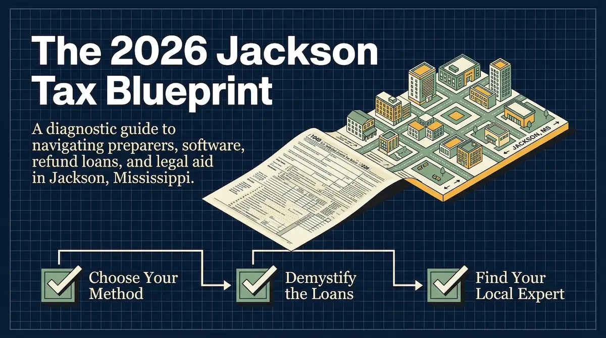
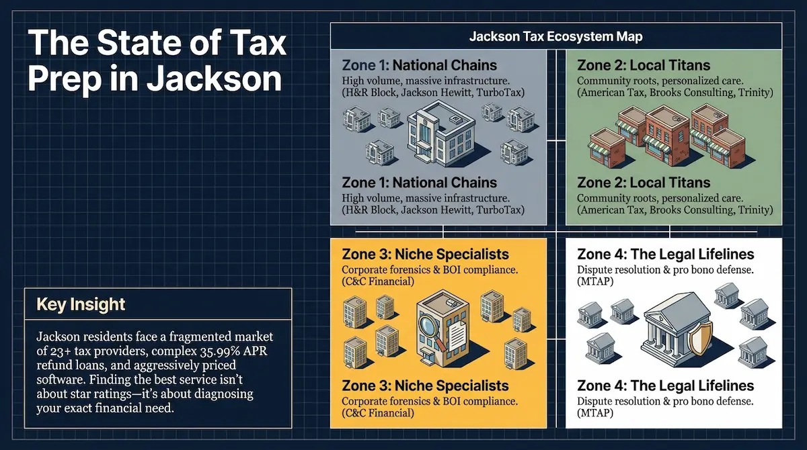
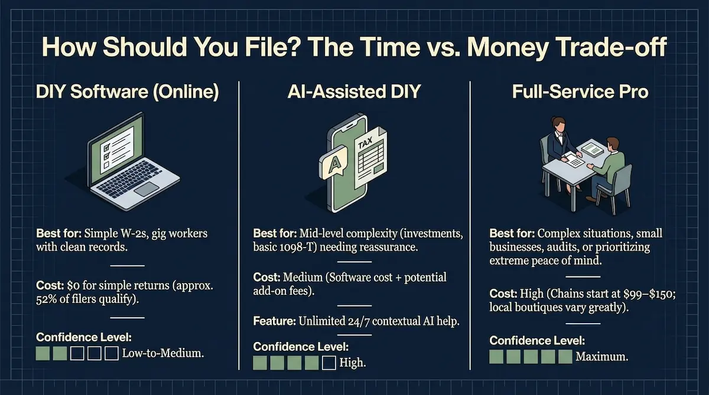
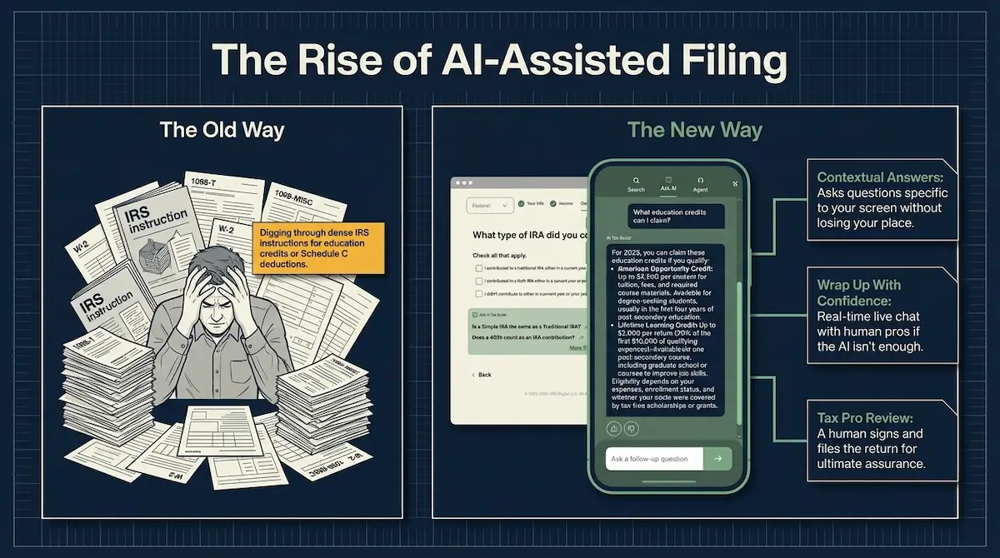
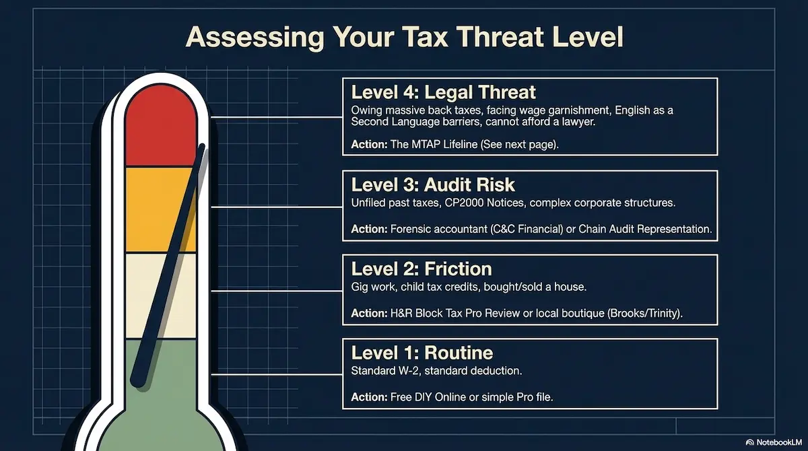
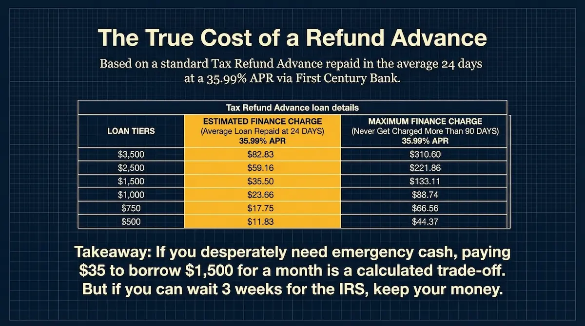
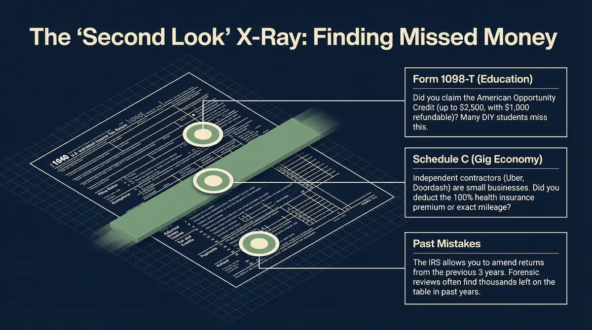
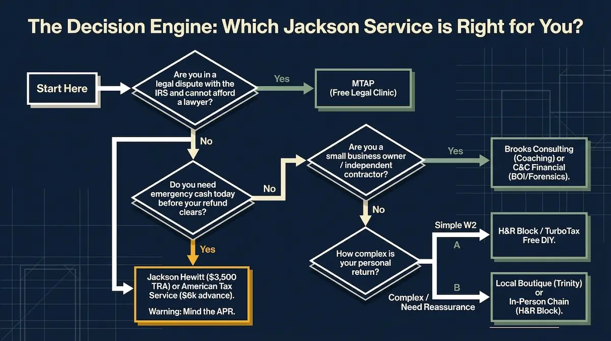
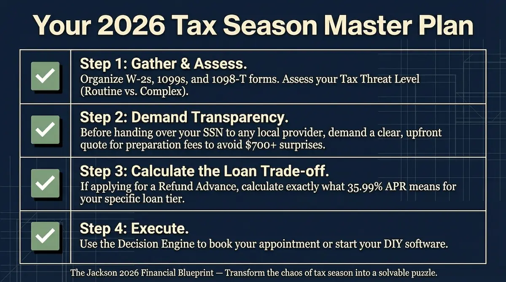

A complete diagnostic guide for Jackson, Mississippi residents — covering how to choose the right filing method, what refund advances actually cost, how to recover money from past returns, and where to get free legal help if the IRS comes knocking.

Jackson, Mississippi residents filing their 2025 returns in 2026 face one of the most fragmented tax preparation markets in the South. With more than 23 providers operating in the metro area, a refund advance industry running at 35.99% APR, and software costs that can balloon without warning, navigating tax season here requires more than just showing up at the nearest office with your W-2.
There is also important news on the state tax front. Mississippi's Build-Up Mississippi Act, signed into law in March 2025, is actively phasing out the state's individual income tax over the coming years. For 2025 returns, the state income tax rate is 4.7% — down from previous years — with the first $10,000 of taxable income fully exempt. The standard deduction is $2,300 for single filers and $4,600 for joint filers. Social Security benefits, military retirement pay, and railroad retirement benefits remain entirely exempt from Mississippi state income tax.
This guide cuts through the noise. It tells you exactly how to choose the right filing method for your situation, what a refund advance actually costs before you sign for one, how to uncover money in past returns you may have filed incorrectly, and where to find free professional legal help if you owe the IRS money you cannot pay. The state deadline for 2025 returns is April 15, 2026.
Key Insight: Jackson residents face a fragmented market of 23+ tax providers, complex 35.99% APR refund loans, and aggressively priced software. Finding the best service isn't about star ratings — it's about diagnosing your exact financial need first.

Part 1: How Should You File? The Time vs. Money Trade-Off
The first decision every Jackson filer needs to make is structural: which filing method fits your situation? There are three distinct models, each with a different cost profile, confidence level, and time commitment. Roughly 52% of all filers nationally qualify for a genuinely free federal return — meaning a significant portion of Jackson households have no reason to pay anything to file.

Option A: DIY Software (Online)
The most cost-efficient path for filers with straightforward W-2 income, standard deductions, and no significant life changes. H&R Block and TurboTax both offer free federal filing for simple returns, and FreeTaxUSA charges just $15.99 to add the Mississippi state return. IRS Free File is also available for households earning under $84,000.
- Cost: $0 for simple federal returns (approx. 52% of filers qualify). State return typically $0–$15.
- Best for: Simple W-2s, students, gig workers with clean records and straightforward Schedule C income.
- Confidence level: Low to Medium. You are solely responsible for knowing what deductions exist.
- Key risk: Missing credits you didn't know to look for — particularly education credits and self-employment deductions.
Option B: AI-Assisted DIY
This middle-ground approach uses software with integrated AI guidance — most notably H&R Block's AI Tax Assist — to deliver 24/7 contextual answers while you file. It is the strongest option for mid-level complexity: investment income, basic education credits (Form 1098-T), or situations where you want professional-grade reassurance without full professional prices.
- Cost: Medium — software base cost plus potential add-on fees.
- Best for: Filers with investments, education credits, or those who need guidance on specific line items.
- Key feature: AI responds to your exact screen in real time. A human Tax Pro review is available as a final check before submission.
- Confidence level: High. Errors are flagged before filing, and a credentialed human can verify the final return.
Option C: Full-Service Professional
Handing your documents to a credentialed preparer remains the gold standard for accuracy, audit protection, and confidence. In Jackson, full-service options range from national chains starting at $99–$150 to locally owned boutiques with varying rates. A good preparer doesn't just file — they explain your refund, identify missed opportunities, and give you a plan for next year.
- Cost: High. National chains typically start at $99–$150 for basic returns; local boutiques vary considerably.
- Best for: Complex situations, small business owners, anyone facing an audit, or filers prioritizing peace of mind.
- Confidence level: Maximum. A credentialed professional signs your return and is liable for errors.

Part 2: What Is Your Tax Threat Level?
Before selecting a Jackson tax service, assess where your situation falls on this four-level framework. Each level points to a specific type of response — and using the wrong level of service is either wasteful or genuinely risky.

Level 1 — Routine: Standard W-2 employment income, taking the standard deduction, no major life changes. The most common situation for Jackson households.
Action: Free DIY online filing or a basic professional return. Either option handles this efficiently and at low cost.
Level 2 — Friction: Gig economy income, child tax credits, a home purchase or sale, unemployment income, or multiple income sources. These situations introduce legitimate complexity worth professional review.
Action: H&R Block Tax Pro Review, or a local boutique like Brooks Consulting or Trinity Financial for personalized attention.
Level 3 — Audit Risk: Unfiled past returns, an IRS CP2000 notice flagging a discrepancy, complex corporate structures, or significant unreported income. General preparers are not equipped for these situations.
Action: A forensic-capable firm like C&C Financial Services, or chain audit representation through H&R Block or Jackson Hewitt.
Level 4 — Legal Threat: Substantial back taxes owed, active wage garnishment, IRS collections underway, or significant language barriers navigating federal law. This level requires legal representation — not a tax preparer.
Action: The MTAP Lifeline (see Part 4). Free legal representation is available to qualifying Jackson residents — use it.
Part 3: The Truth About Refund Advance Loans in Jackson
Refund advance loans — marketed as "Money Today" or "Tax Refund Advance" — are among the most aggressively promoted products at Jackson area tax offices each season. Understanding exactly how they work, what they cost, and when they make sense is essential before signing anything.
How a Refund Advance Works — Step by Step
- Minute 0: You file your W-2 with a tax professional at the office.
- Minute 15: Underwriting runs automatically in the background. No impact on your credit score.
- Minute 30: If approved, funds are loaded onto a prepaid debit card (the Money Today Guarantee).
- Day 24 (average): The IRS issues your actual refund. The bank intercepts it, deducts the loan principal plus finance charges at 35.99% APR, and deposits the remainder to you.
The Golden Rule: A Refund Advance is not free money. It is a short-term, high-interest loan secured by your own future tax refund.
The True Cost: What 35.99% APR Means in Real Dollars
The table below shows the actual finance charges on standard Tax Refund Advance loans repaid in the average 24-day window, calculated at 35.99% APR through First Century Bank. The maximum charge column reflects the worst case — if the IRS delays your refund up to 90 days.

| Loan Amount | Est. Finance Charge (24 Days) | Max Finance Charge (90 Days) |
|---|---|---|
| $3,500 | $82.83 | $310.60 |
| $2,500 | $59.16 | $221.86 |
| $1,500 | $35.50 | $133.11 |
| $1,000 | $23.66 | $88.74 |
| $750 | $17.75 | $66.56 |
| $500 | $11.83 | $44.37 |
The takeaway is clear: if you genuinely need emergency cash and cannot wait three weeks for your IRS refund, paying $35 to borrow $1,500 for a month is a calculated trade-off that many Jackson households can reasonably make. But if you can wait — and the IRS typically processes electronic returns within 10 to 21 days — you keep that money entirely.
One important nuance: the IRS processes Mississippi electronic returns within roughly 10 business days on average for straightforward returns. If you file electronically and opt for direct deposit, you may receive your actual refund before the average 24-day loan settlement date used in the table above. In that scenario, a refund advance loan saves you almost no time while still costing you the finance charge.
Part 4: The 'Second Look' — How to Find Money in Past Returns
Most Jackson residents file their taxes and move on, assuming the return was correct. But the IRS allows taxpayers to amend returns from the previous three years — and forensic reviews of past filings routinely uncover thousands of dollars left on the table. Three areas account for the majority of missed money:

Form 1098-T — Education Credits
If you or a dependent attended a college, university, or vocational school and you received a Form 1098-T, you may be eligible for the American Opportunity Credit — worth up to $2,500 per eligible student, with $1,000 of that amount refundable even if you owe no tax. Many DIY filers miss this credit entirely because the eligibility rules are not intuitive. Mississippi does not offer its own state-level equivalent of the federal Earned Income Tax Credit, making federal credits like this one even more valuable to capture.
Schedule C — Gig Economy Deductions
Uber drivers, DoorDash couriers, freelancers, and independent contractors in Jackson are legally classified as small business owners for tax purposes. That status comes with powerful deductions that many filers fail to take: the 100% self-employed health insurance premium deduction, exact mileage tracked using the IRS standard rate, a home office deduction for space used exclusively for work, and the deduction for half of self-employment tax paid. Missing even one of these categories on a prior-year return could mean a meaningful amended refund.
Past Mistakes — Amended Returns
The IRS Form 1040-X allows taxpayers to amend returns from the previous three tax years. For 2026 filers, that window covers tax years 2022, 2023, and 2024. If a prior preparer made errors — wrong filing status, missed dependents, or unclaimed credits — those mistakes can be corrected and any resulting refund claimed. H&R Block's Second Look service, offered free of charge, reviews prior-year returns specifically to identify these opportunities.
Part 5: The MTAP Lifeline — Free Legal Help for Jackson Taxpayers
Most people do not know this resource exists. The Mississippi Taxpayer Assistance Project (MTAP) is a Low Income Taxpayer Clinic operated by North Mississippi Rural Legal Services — entirely independent from the IRS. It is the only clinic of its kind in the state, and it provides free legal representation to low-income and ESL (English as a Second Language) taxpayers throughout Mississippi, year-round.
Who MTAP Serves
MTAP represents clients who are in formal or informal disputes with the IRS and cannot afford private legal counsel. Qualifying situations include unpaid back taxes, wage garnishment orders, IRS collection actions, incorrectly filed returns that have triggered IRS enforcement, and situations where language barriers are making it impossible for a taxpayer to navigate the system alone.
What MTAP Does
- Pro bono legal representation in IRS disputes, hearings, and appeals — at no cost to the client.
- Taxpayer rights education: Explains what the IRS can and cannot legally do, and what options are available.
- Wage garnishment prevention: Works to stop or reduce IRS collection actions before they permanently impact a client's finances.
- ESL outreach: Provides assistance in languages other than English for taxpayers with limited English proficiency.
How to Contact MTAP
If you owe the IRS money you cannot pay, or have received a collections notice you do not understand, contact MTAP before taking any other action:
- Main line (owe the IRS?): 1-888-808-8049
- Intake Call Center: 1-800-898-8731 (Monday–Thursday, 9:30 AM – 3:30 PM)
For Jackson residents who need IRS face-to-face assistance from a federal representative, the IRS Taxpayer Advocate Service can also be reached directly at (601) 292-4800.
If you are facing IRS collections and cannot afford a lawyer, MTAP is the most important phone number in this guide. Call before the situation escalates.
Part 6: Which Jackson Service Is Right for You?
With all of the above in mind, the following framework matches your specific situation to the right type of provider. Use it as a starting point before booking any appointment.

| Your Situation | Best Action |
|---|---|
| In a legal dispute with the IRS, cannot afford a lawyer | MTAP — Free Legal Clinic (1-888-808-8049) |
| Need emergency cash today before your refund clears | Jackson Hewitt TRA ($3,500 advance). Mind the 35.99% APR. |
| Small business owner or independent contractor | Brooks Consulting (coaching) or C&C Financial (BOI/forensics) |
| Simple W-2, standard deduction, no complexity | H&R Block or TurboTax free DIY online |
| Mid-complexity: investments, gig income, home sale | H&R Block Tax Pro Review or Trinity Financial / Brooks Consulting |
| Unfiled past returns, CP2000 notice, audit risk | C&C Financial Services or chain audit representation |
Your 2026 Tax Season Master Plan
Before you walk into any Jackson tax office or open any software, run through this four-step checklist. It takes 15 minutes and will save you from the most common and costly mistakes of tax season.

- Gather and Assess: Organize your W-2s, 1099s, and 1098-T forms. Review the Tax Threat Level framework in Part 2 and honestly assess which level applies to your situation. This single step determines everything that follows.
- Demand Transparency: Before handing over your Social Security number to any local provider, demand a clear, written fee quote upfront. Reviews of Jackson-area tax offices consistently document bait-and-switch pricing, with un-itemized fees sometimes exceeding $700–$1,000 deducted directly from the refund. A legitimate preparer will provide written pricing before starting any work.
- Calculate the Loan Trade-Off: If you are considering a refund advance, use the table in Part 3 to calculate exactly what 35.99% APR means for your specific loan amount. If you can wait for the IRS — and electronic filers typically receive refunds within 10 to 21 days — keep the money.
- Execute: Use the Decision Engine in Part 6 to book your appointment or start your DIY software. The state deadline is April 15, 2026. Extensions are automatic if you file a federal extension, but any tax owed must still be paid by April 15 to avoid penalty and interest.
Blueprint Rule: Always demand a written price quote before handing over your SSN. No legitimate preparer will refuse this request.
© 2026 Mississippi Lead. All rights reserved.
← Back to Mississippi Lead